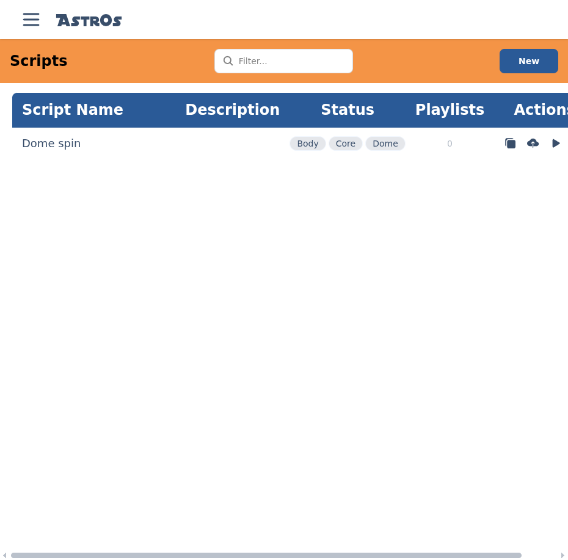
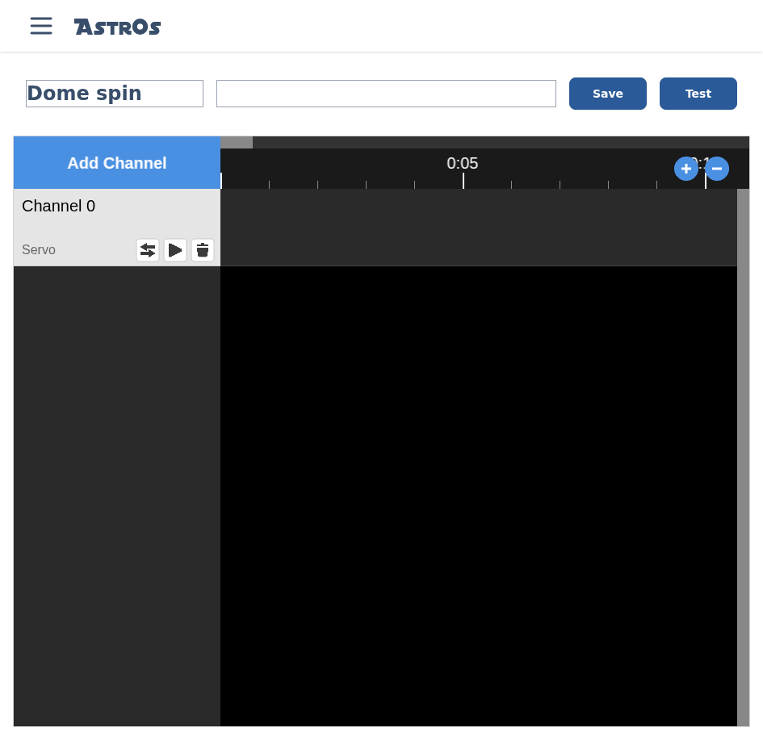
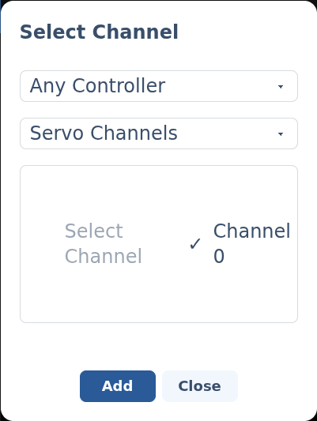

Script an animation.
A script is a timeline of timed events across one or more channels — how you choreograph your droid's servos, sound, lights and motion. You build scripts in the Scripter.
§The Scripts list
The Scripts screen lists your scripts with their Status and any Playlists they belong to. Filter to find one, use a row's Actions to duplicate, upload or run it, or select New to start one.

§The editor
A script has a Name and Description, then a timeline with one track per channel. The ruler shows time; use the zoom controls to move in and out. Save stores the script and Test runs it on the droid.

§Add a channel
Select Add Channel, then choose a controller (Body, Core or Dome), a channel type, and the specific channel. Channels come from the hardware you set up in Modules, so configure and Sync your modules first.

§Add events
Click a channel's track at the moment you want something to happen. The editor that opens depends on the channel type:
- Servo events — move a servo.
- GPIO events — switch an output.
- Audio events — play HCR sound.
- Kangaroo events — drive a Kangaroo X2.
- I²C events — send to an I²C device.
- Serial (UART) events — send to a serial device.
§Test & save
Test sends the script to a connected droid and plays it so you can check the timing. Save stores it — from there you can add it to a playlist or trigger it from the remote.